Crostate
La frutta
è la decorazione.
Frolla friabile, crema e frutta fresca tagliata al momento: tonde, rettangolari o a cuore, con la dedica scritta a mano. Della misura che serve, dal dolce della domenica al buffet per gli invitati.
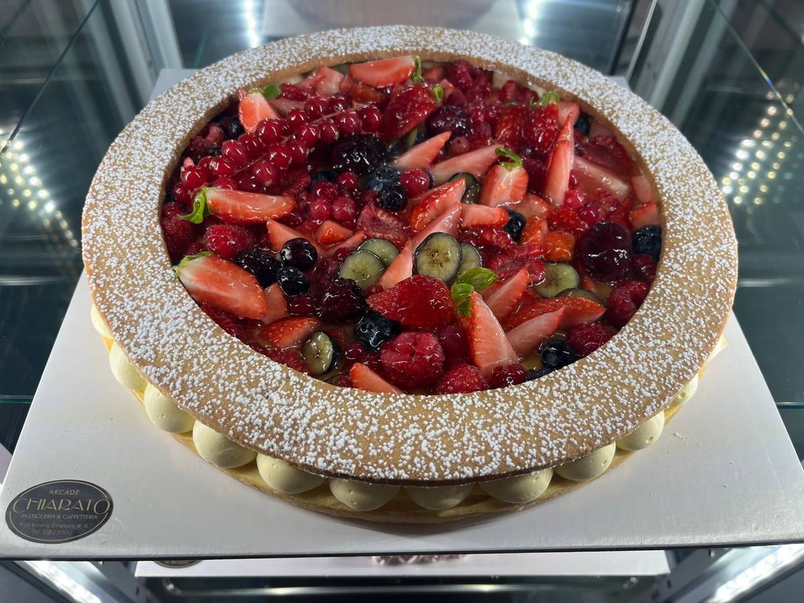
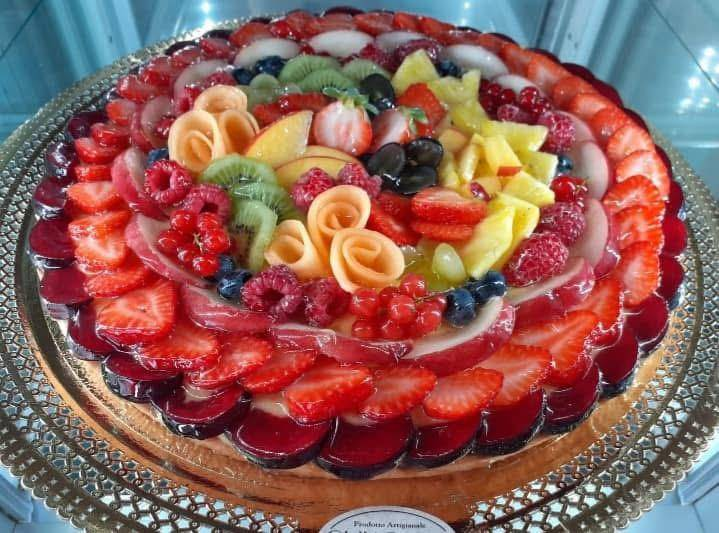
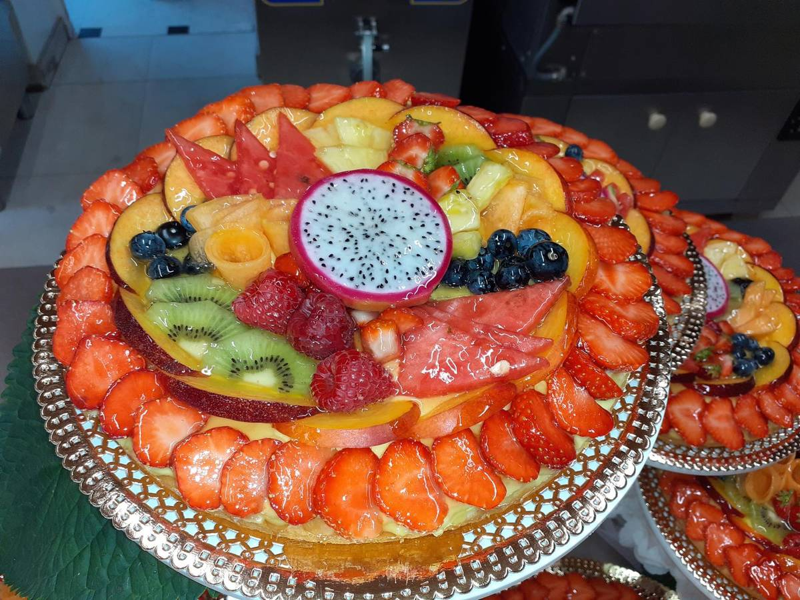
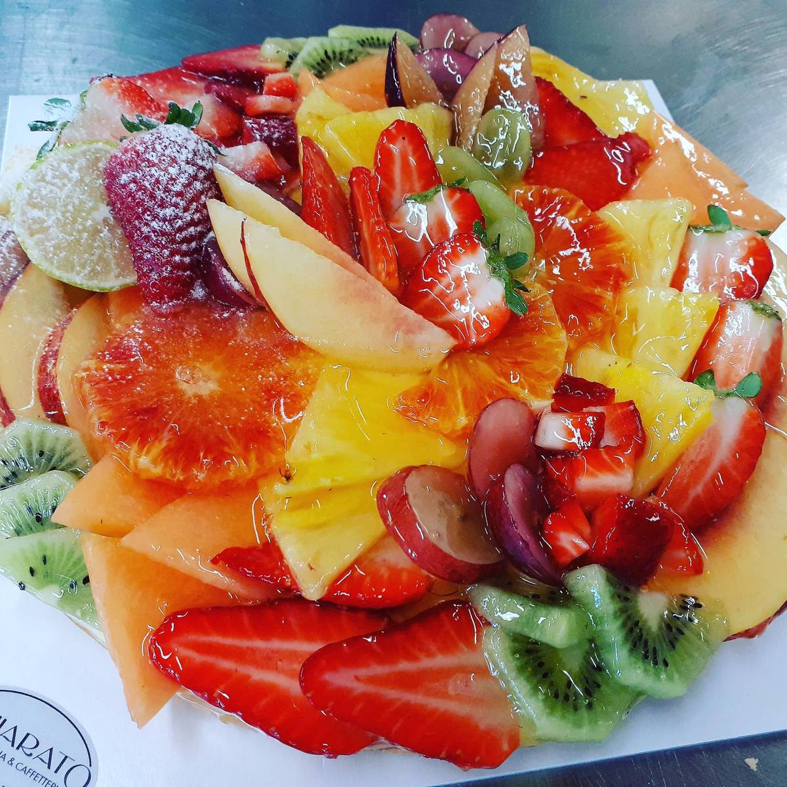
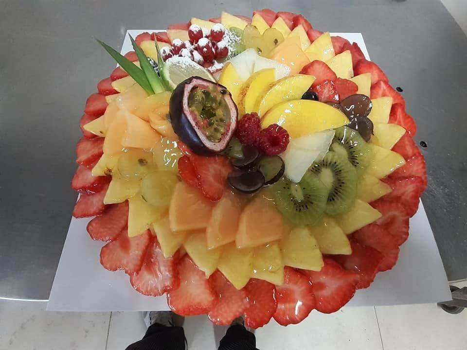
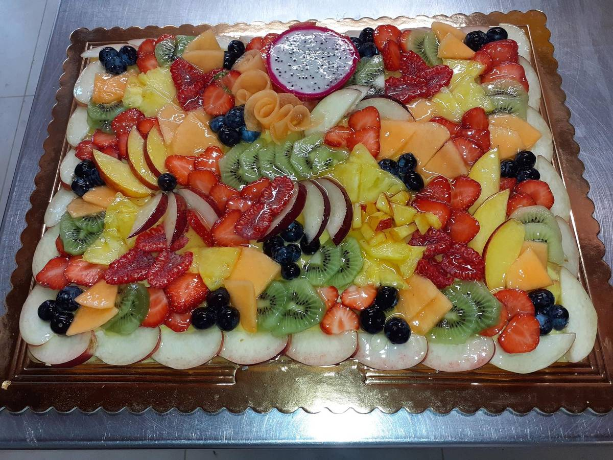
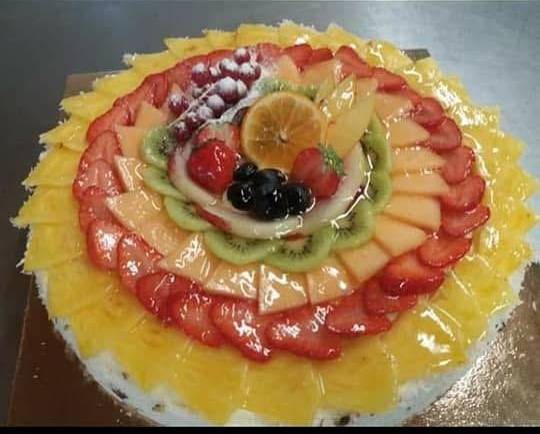
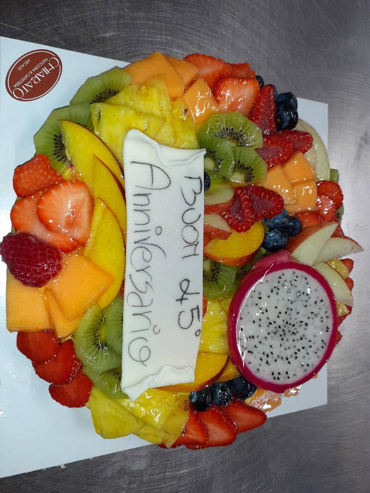
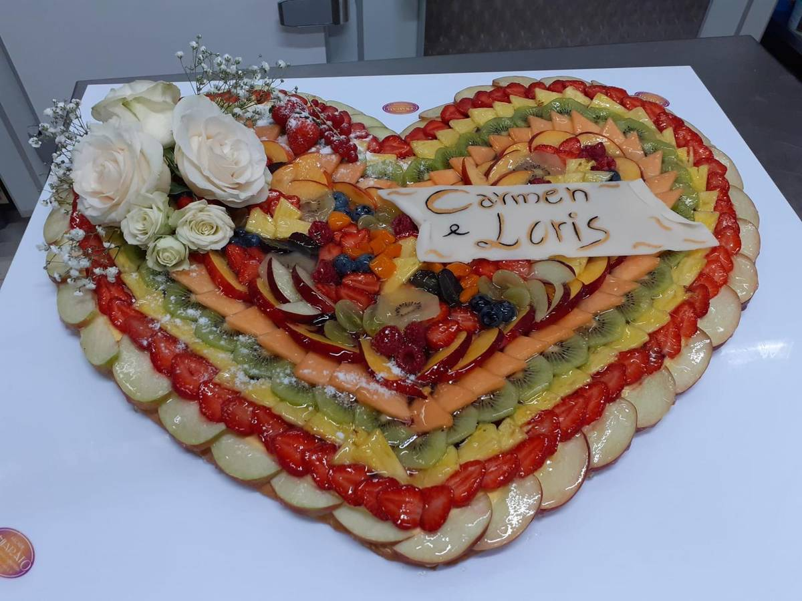
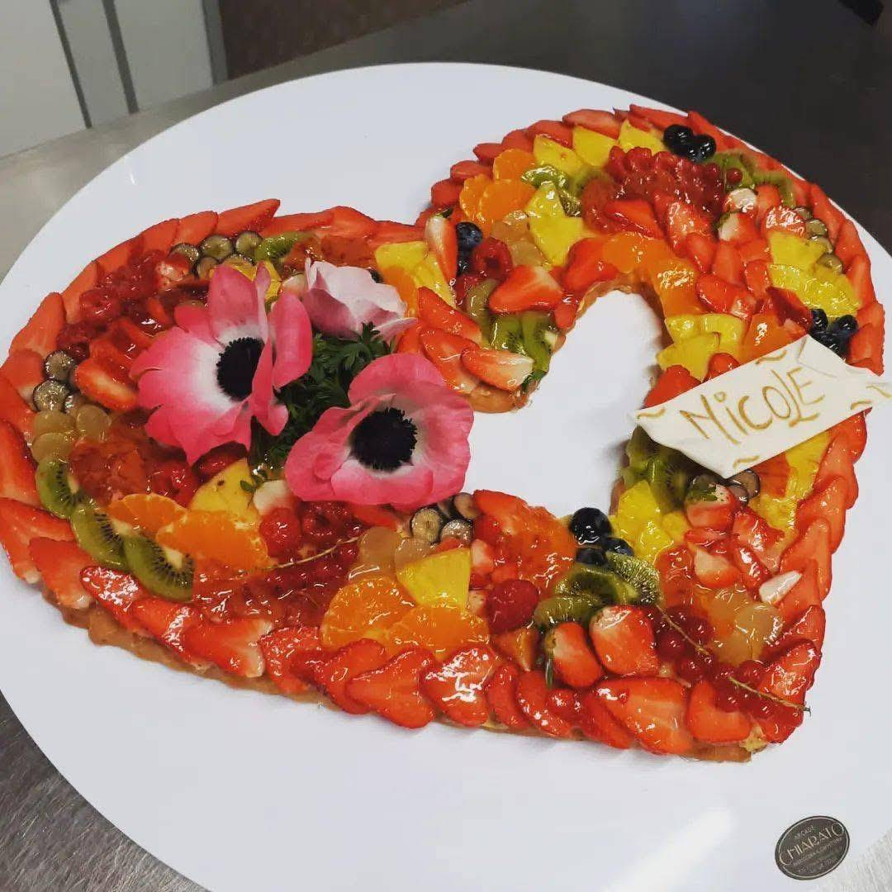
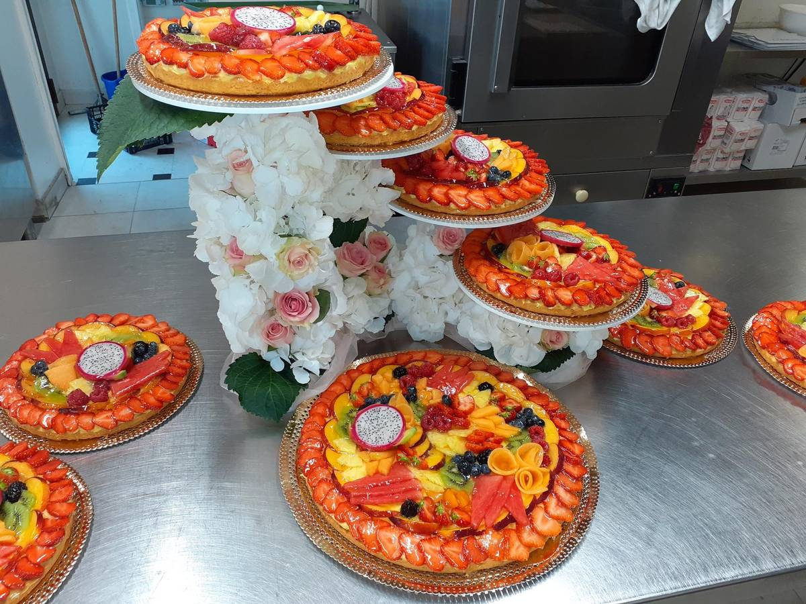
Parliamone